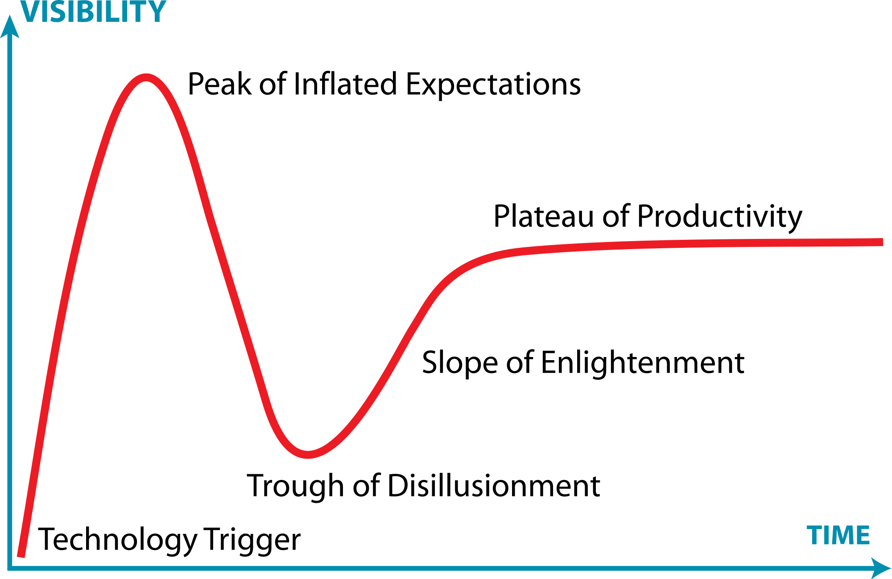
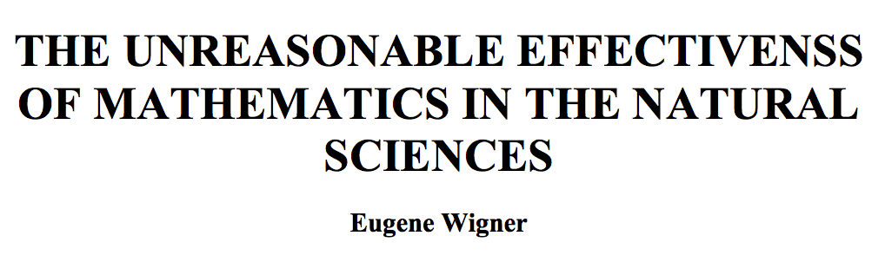
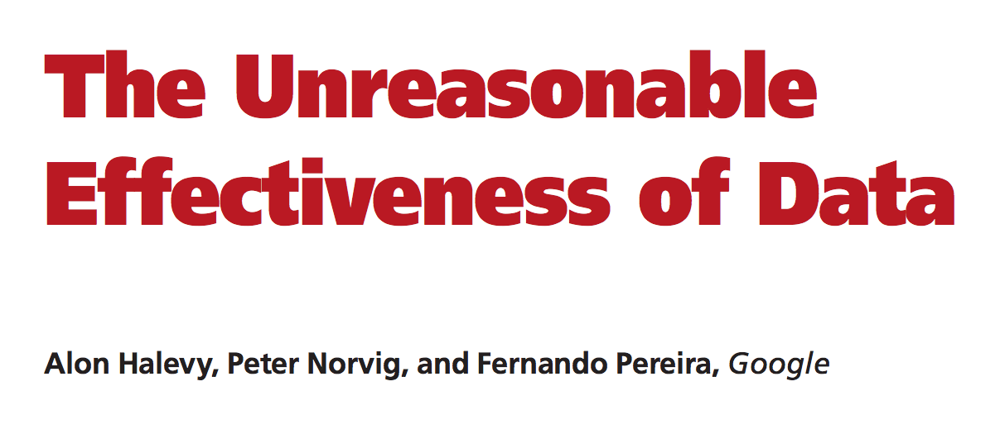
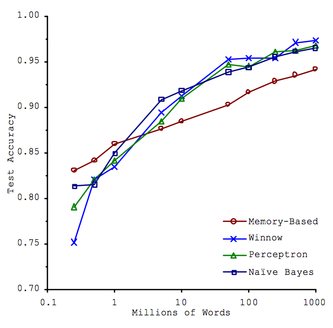

Size and Complexity in Real Data Systems
Monday December 15, 2014
A short talk for AIR.
A friend from the Midwest got in touch with me recently to get my address for a Christmas card. We got to talking, and I told her that I was going to be talking about big data. She asked me, "What's big about it?"
I think that's a fair question. I think it's fair to expect that simple words should combine in simple ways.
“Big Cars”
Let's talk about “Big Cars” for a minute. Everyone knows what big cars are. Let's see if “the four V's of big data” make sense for cars.
- Volume: Do big cars have big volume? Yes. This one makes sense.
- Velocity: Are big cars moving, possibly quickly? Well, maybe they are, maybe they aren't. Big cars can be standing still, and fast cars can be small.
- Variety: Are big cars of many different types? This is clearly important to a mechanic, but again, size and variety are not necessarily related.
- Veracity: What does this even mean? “Is it a real Hummer?” But more importantly: Do we care more about veracity for big cars than small cars?
The good news here is that the leaders of the field agree with your average Midwesterner about what “big” ought to mean, and I'll get to that.

Gartner's hype cycle is a cartoonish way of trying to understand the world. Like many cartoonish ways of trying to understand the world, it can be very helpful.
I'm going to take you through the “trough of disillusionment,” up the “slope of enlightenment,” and talk about what work generally looks like on the “plateau of productivity.”
My objective is to cut “Big Data” down to size for you. I want to keep things concrete with examples. My thesis is that more than any particular technology or technique, we need better-engineered and open systems. And I'll tell you to learn Python.

Alan Kay is an influential computer scientist. He's the one who said, “The best way to predict the future is to invent it.” He also said, at a talk earlier this year:
Big data is a way that a lot of people are trying to make money today. And it's a favorite of marketing people, because it's in the wind. Everybody has heard the phrase “big data.” Not everybody knows what it means. And so it's the perfect context for doing things that people can say, “Well this is an application of big data and this is an application of big data.” But in fact, the interesting future's not about data at all - it's about meaning.
It isn't just luminaries who are disillusioned with the abuse of the phrase “Big Data.” Even companies like Deloitte are scaling back the hype. Just last Wednesday Deloitte published a piece on the Wall Street Journal's web site called Should We Stop Using the Term ‘Big Data’?. The answer is yes.
Deloitte was objecting mainly to the lack of clarity in using “Big Data” to mean so many different things. Let's lock that down first.

For convenience of communication, let's have big data be big. John Langford has done some of the most interesting work on truly large data at Yahoo! and Microsoft, and his practical definition of big data is the best I've seen. (source).
It's not quite the same thing as being “O(n2) algorithm feasible,” but to put it in different words, let's say that small data is data that you could theoretically work with in Excel [1].
Medium data might fit on one computer, but to work with it you'll probably need someone who knows what “O(n2)” means. And you might still want to spread that data across multiple machines to get better performance.
Very few people have big data by the definition here.
[1]: It has never been a good time to use Excel. If you care about getting the right answer, you shouldn't use Excel. But more and more, we've moved from the era of “shouldn't use Excel” to the era of “can't use Excel.” There are lots of reasons that you can't use Excel these days, and they include volume, velocity, variety, and veracity. I think that when some people say “Big Data,” what they mean is “data beyond Excel.”
If you care about convincing anyone else that you got the right answer, you shouldn't use Excel or Minitab or SPSS or Stata or SAS or MATLAB or any proprietary software. Results should be accompanied by data and source code, and that includes the underlying source code of your tools.
Is more data better?
Distinct from the question of whether our data is big is the question of whether we want more data at all. What good is it?

In 1960, Wigner said that “The miracle of the appropriateness of the language of mathematics for the formulation of the laws of physics is a wonderful gift which we neither understand nor deserve.” This paper, The Unreasonable Effectiveness of Mathematics in the Natural Sciences, gets at something profound, and was sufficiently interesting to become something of an academic meme.

So in 2009, some folks at Google come out with The Unreasonable Effectiveness of Data. What did they mean?

A good illustration of their point is a 2001 Microsoft paper. The graph shows that for their natural language problem it seems to matter more how much data you have than which algorithm you use. Their data is text. There are three things to say here.
First, is this big data? Their complete data set was a billion words. Around five gigabytes. Not big by our definition. Perhaps medium. But it was bigger than other people had been using then.
Second, how are we measuring effectiveness? The Y axis is prediction accuracy on a test set. The model sees some training data, and then we ask it to predict for separate test data, and we see how often it's right. This is a predictive framing of the problem, which is powerful. It's the scientific method: the model is correct to the extent it makes correct predictions. It doesn't make much sense to try to interpret these models in any other way.
Here's an analogy to consider: computational linguistics is to traditional linguistics as machine learning is to traditional statistics.
Finally, should we be surprised? Or do we understand and deserve this effectiveness of data? The problem these models are attacking is a natural language problem. All these models are trying to overcome the poverty of the stimulus, and they have a lot less language instinct than you or I. So it makes sense that they should do better when they get to study more text.
So here is a case where more data is better. Are all cases like this? No! What is it about this case that makes more data better? Fundamentally, it's the complexity of the model [2].
[2]: Xavier Amatriain (formerly of Netflix) has a good explanation of this which inspired this section.